Gallery


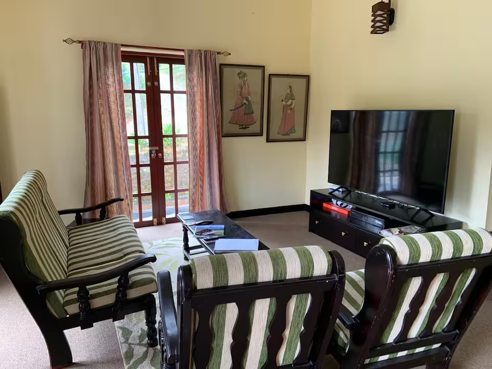
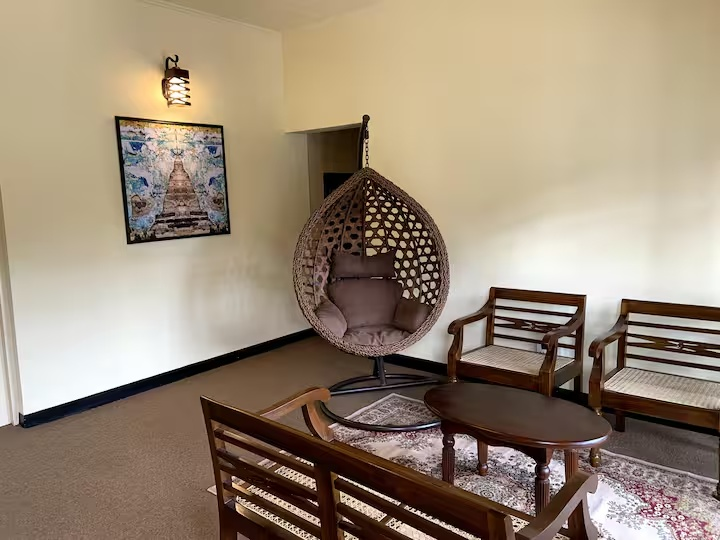
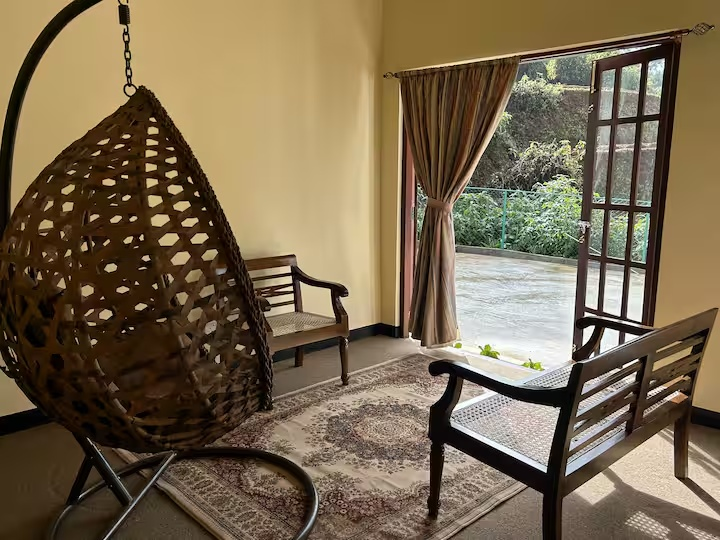
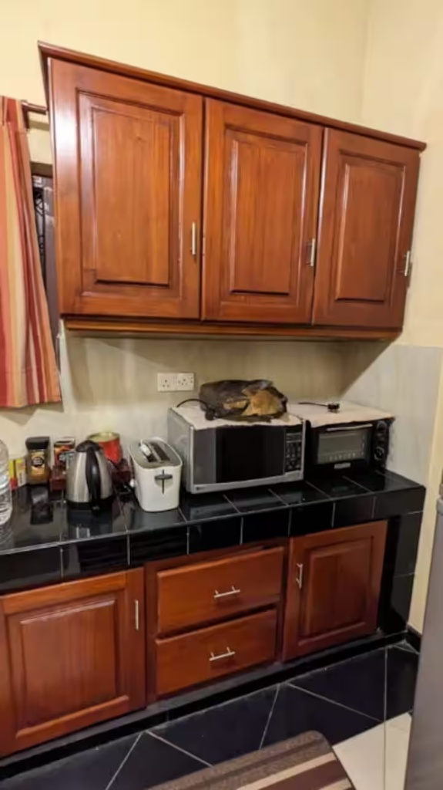
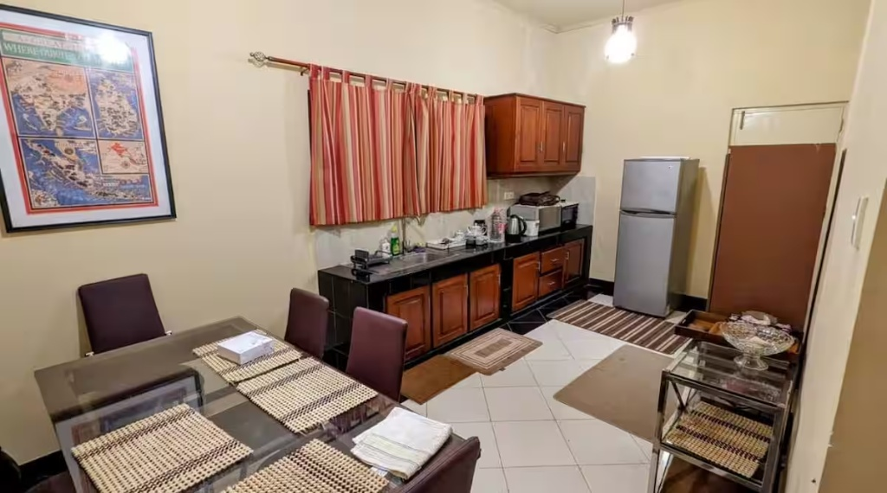
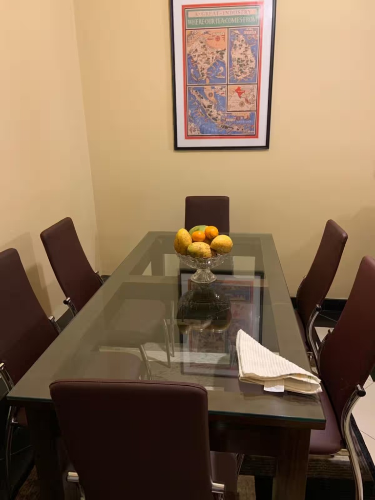
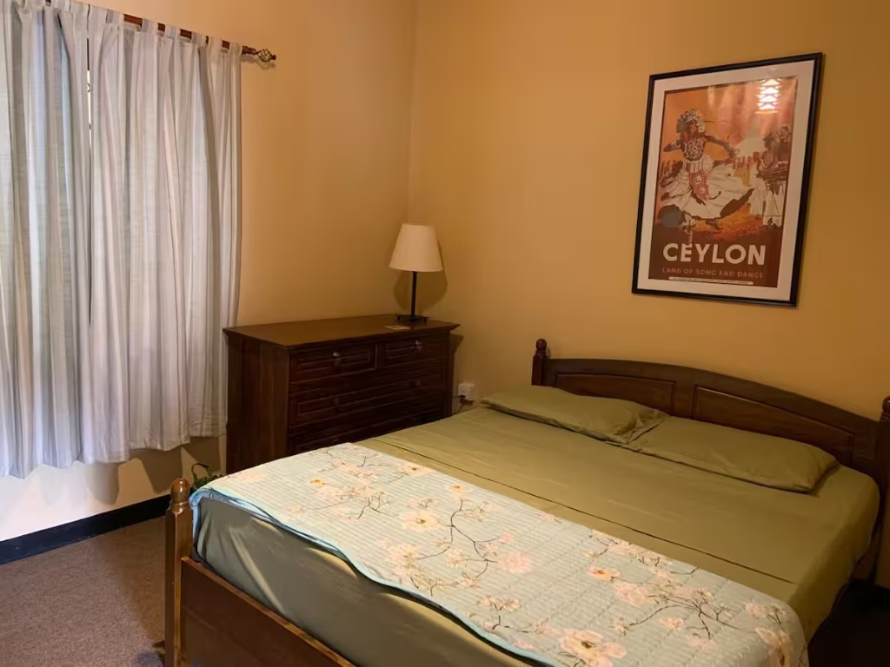
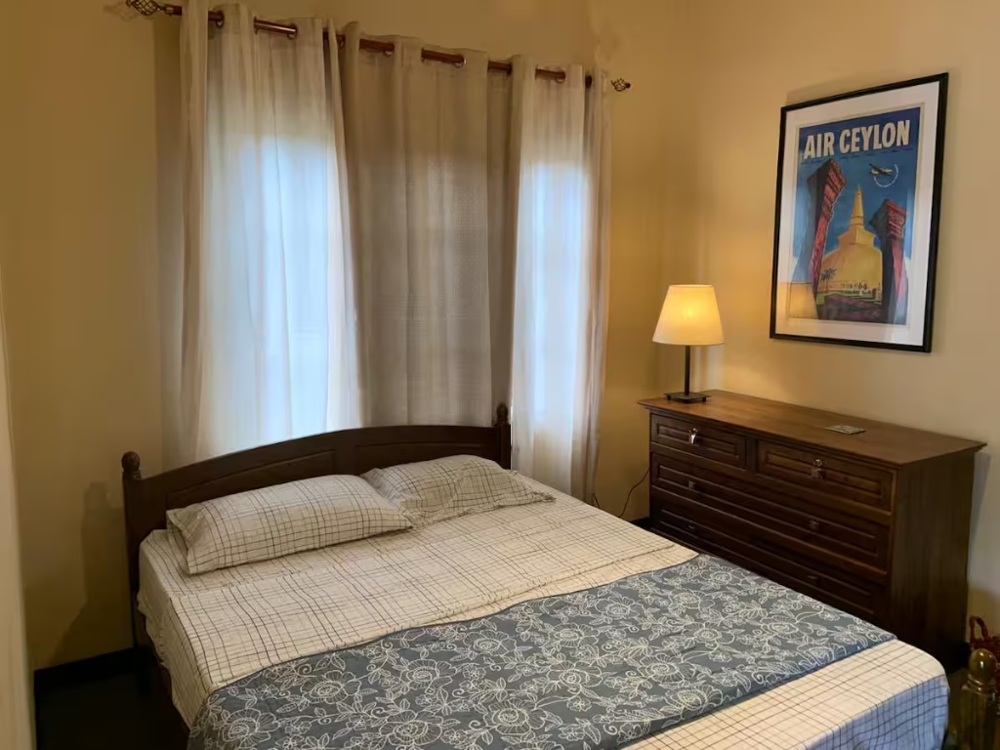
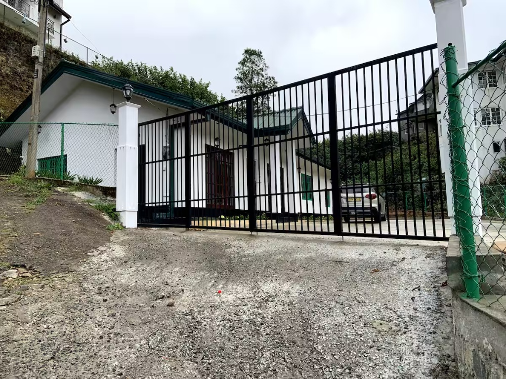
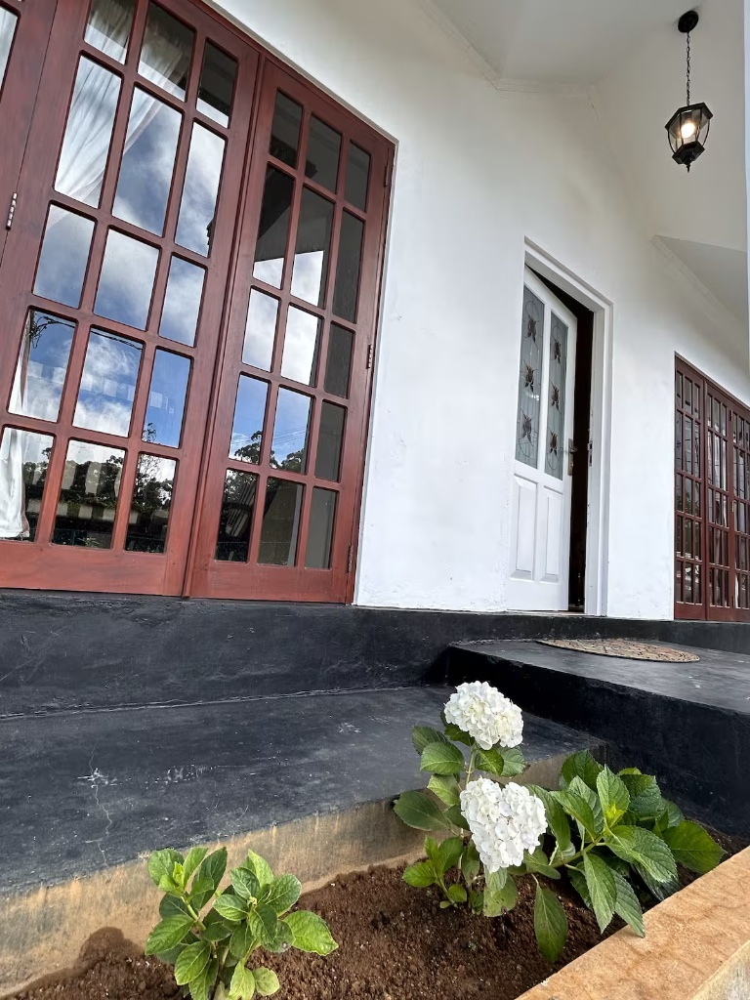
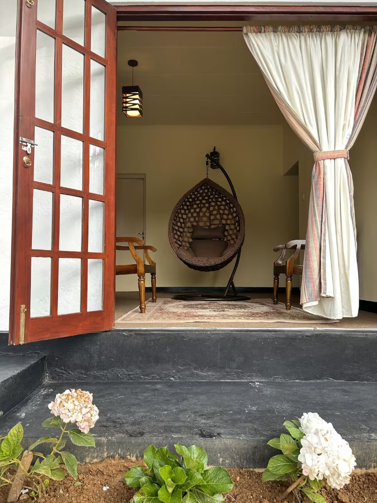
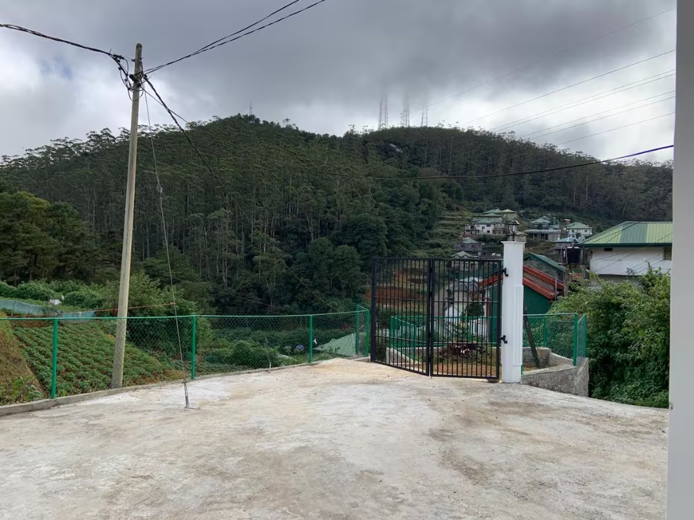
Experience the serene beauty and cool climate of Nuwara Eliya.
නුවරඑළියේ සන්සුන් සුන්දරත්වය සහ සිසිල් දේශගුණය අත්විඳින්න.
Book NowSpacious and comfortable rooms for a relaxing stay.
විවේකී නවාතැනක් සඳහා ඉඩකඩ සහිත සහ සුවපහසු කාමර.
Ample sleeping space, perfect for families and groups.
ප්රමාණවත් නිදන ඉඩක්, පවුල් සහ කණ්ඩායම් සඳහා පරිපූර්ණයි.
Clean and modern with hot water facilities Bathrooms.
උණු වතුර පහසුකම් සහිත පිරිසිදු හා නවීන නාන කාමර.
Comfortably accommodates up to 8 guests.
අමුත්තන් 8 දෙනෙකු දක්වා සුවපහසු ලෙස නවාතැන් ගත හැකිය.
Free daily tea parties.
නොමිලේ දිනපතා තේ පැන් සංග්රහයන්.
Welcome to Nalaka Rest, your perfect getaway nestled in the beautiful misty hills of Nuwara Eliya. Surrounded by lush green tea estates and scenic waterfalls, our retreat is designed to be your 'home away from home'. Whether you are planning a fun family vacation or a peaceful retreat with close friends, Nalaka Rest offers the privacy, comfort, and authentic Sri Lankan hospitality you deserve.
නුවරඑළියේ සුන්දර මීදුම සහිත කඳුකරයේ පිහිටා ඇති ඔබට පරිපූර්ණ නිවාඩුවක්. සශ්රීක හරිත තේ වතු සහ දර්ශනීය දිය ඇලි වලින් වටවී ඇති අපගේ නිවාඩු නිකේතනය ඔබේ 'නිවසින් ඈත් වූ නිවස' ලෙස නිර්මාණය කර ඇත. ඔබ විනෝදජනක පවුල් නිවාඩුවක් සැලසුම් කළත් හෝ සමීප මිතුරන් සමඟ සාමකාමී නිවාඩුවක් සැලසුම් කළත්, නාලක රෙස්ට් ඔබට ලැබිය යුතු පෞද්ගලිකත්වය, සුවපහසුව සහ අව්යාජ ශ්රී ලාංකික ආගන්තුක සත්කාරය පිරිනමයි.












Smoking is strictly prohibited inside the rooms. Please use the outdoor areas.
කාමර ඇතුළත දුම්පානය සපුරා තහනම්. කරුණාකර එළිමහන් ප්රදේශ භාවිතා කරන්න.
Explore the beauty of Nuwara Eliya. Here are some popular places near Nalaka Rest.
නුවරඑළියේ සුන්දරත්වය ගවේෂණය කරන්න. නාලක රෙස්ට් අසල ජනප්රිය ස්ථාන කිහිපයක් මෙන්න.
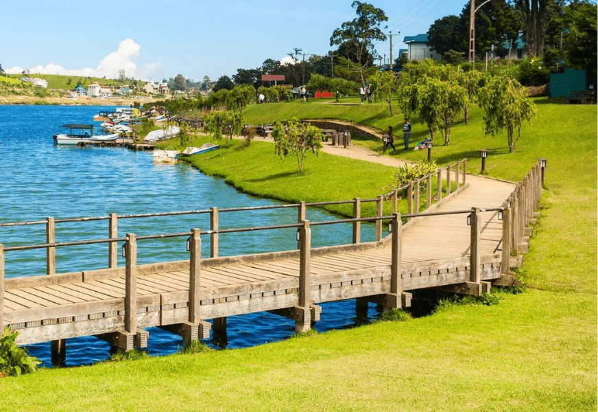
📍 ~2.5 km away
Perfect for relaxing walks, boat rides, and enjoying the cool breeze.
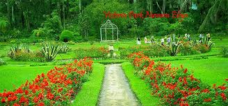
📍 ~2.0 km away
A beautifully maintained park, ideal for picnics and bird watching.
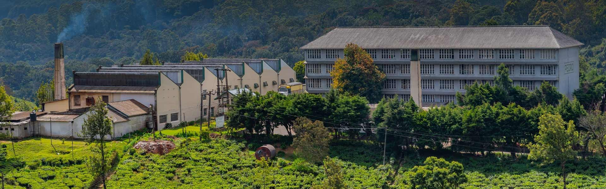
📍 ~4.5 km away
Explore the lush green tea gardens and see how authentic Ceylon tea is made.
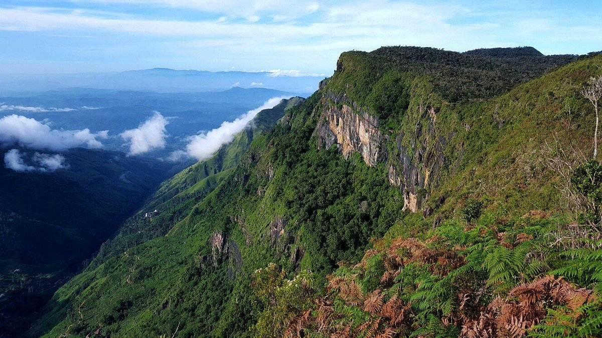
📍 ~28 km away
A stunning national park famous for the 'World's End' viewpoint and Baker's Falls.
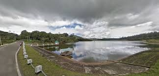
📍 ~10 km away
Since it is located on the road from Nuwara Eliya to Horton Plains (Blackpool - Ambewela - Pattipola road), tourists can easily reach here while visiting Horton Plains.
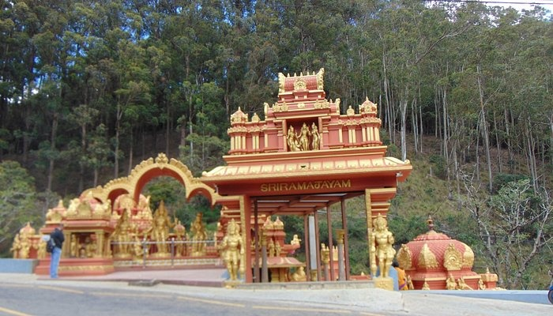
📍 ~6 km away
Historical Significance: According to the Ramayana, this is believed to be the place where Princess Seetha was held captive by King Ravana. The temple is built near the spot where she is said to have prayed daily for Lord Rama to rescue her.
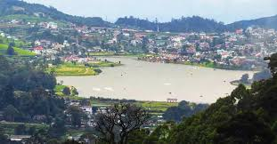
📍 ~7 km away
Shanthipura is famously known as the highest-elevation village in Sri Lanka, situated at approximately 2,334 meters (7,657 feet) above sea level.
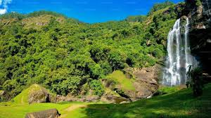
📍 ~22 km away
Discover the breathtaking beauty of Bomburu Ella, widely recognized as the widest waterfall in Sri Lanka. Also known as Perawella Falls, this magnificent natural wonder is safely hidden away in the lush, biodiverse Sita Eliya Kandapola Forest Reserve.
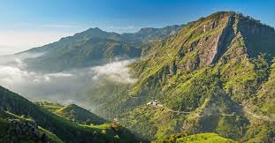
📍 ~10 km away
Stand at the very top of Sri Lanka with a visit to Pidurutalagala, the island's highest mountain peak, towering majestically at 2,524 meters (8,281 feet) above sea level. Located just a short and incredibly scenic drive from Nalaka Rest, this iconic mountain offers an unforgettable experience above the clouds.
Loading reviews...
Share your experience with us!
Our villa features 3 spacious bedrooms designed for ultimate comfort. Each room includes clean linens, warm blankets for the Nuwara Eliya climate, and beautiful views of the surrounding tea estates.
අපගේ විලාවේ උපරිම සුවපහසුව සඳහා නිර්මාණය කර ඇති ඉඩකඩ සහිත නිදන කාමර 3 ක් ඇත. සෑම කාමරයකම පිරිසිදු ලිනන් රෙදි, නුවරඑළිය දේශගුණයට ගැලපෙන උණුසුම් බ්ලැන්කට් සහ අවට තේ වතු වල සුන්දර දර්ශන ඇතුළත් වේ.

We provide 4 highly comfortable beds with premium mattresses. The arrangement is perfect for a family or a group of friends, ensuring a restful night's sleep after a day of exploring.
අපි වටිනා මෙට්ට සහිත ඉතා සුවපහසු ඇඳන් 4ක් සපයන්නෙමු. මෙම සැකැස්ම පවුලකට හෝ මිතුරන් කණ්ඩායමකට පරිපූර්ණ වන අතර, දිනක් ගවේෂණය කිරීමෙන් පසු සුවදායක රාත්රී නින්දක් සහතික කරයි.

The property includes 2 fully equipped, modern bathrooms. Both feature 24-hour hot water, clean towels, and essential toiletries for your convenience.
දේපළෙහි අංගසම්පූර්ණ, නවීන නාන කාමර 2 ක් ඇතුළත් වේ. දෙකෙහිම පැය 24 පුරාම උණු වතුර, පිරිසිදු තුවා සහ ඔබේ පහසුව සඳහා අත්යවශ්ය වැසිකිළි පහසුකම් ඇත.

Our retreat is spacious enough to host up to 8 guests comfortably. The large living area and dining space provide plenty of room for everyone to gather and enjoy meals together.
අපගේ විවේකාගාරය අමුත්තන් 8 දෙනෙකු දක්වා සුවපහසු ලෙස නවාතැන් ගැනීමට තරම් ඉඩකඩ සහිතයි. විශාල විසිත්ත කාමරය සහ භෝජනාගාරය සැමට රැස්වී එකට ආහාර භුක්ති විඳීමට ඕනෑ තරම් ඉඩක් සපයයි.
Experience true Sri Lankan hospitality with our complimentary refreshing Ceylon tea served every morning and evening.
සෑම උදෑසනකම සහ සවසකම පිරිනමන අපගේ ප්රබෝධමත් සිලෝන් තේ සමඟ සැබෑ ශ්රී ලාංකික ආගන්තුක සත්කාරය අත්විඳින්න.
Meal Preparation: While we do not operate a full restaurant, we offer a dedicated cooking service for our guests. Simply bring your preferred groceries and ingredients, and our staff will happily prepare and cook delicious, home-style meals just the way you like them.
අපි සම්පූර්ණ අවන්හලක් පවත්වාගෙන නොගියත්, අපගේ අමුත්තන් සඳහා කැපවූ ඉවුම් පිහුම් සේවාවක් පිරිනමන්නෙමු. ඔබ කැමති සිල්ලර බඩු සහ අමුද්රව්ය සරලව ගෙන එන්න, එවිට අපගේ කාර්ය මණ්ඩලය ඔබ කැමති ආකාරයටම රසවත්, ගෙදර හැදූ ආහාර සතුටින් පිළියෙළ කර පිසිනු ඇත.